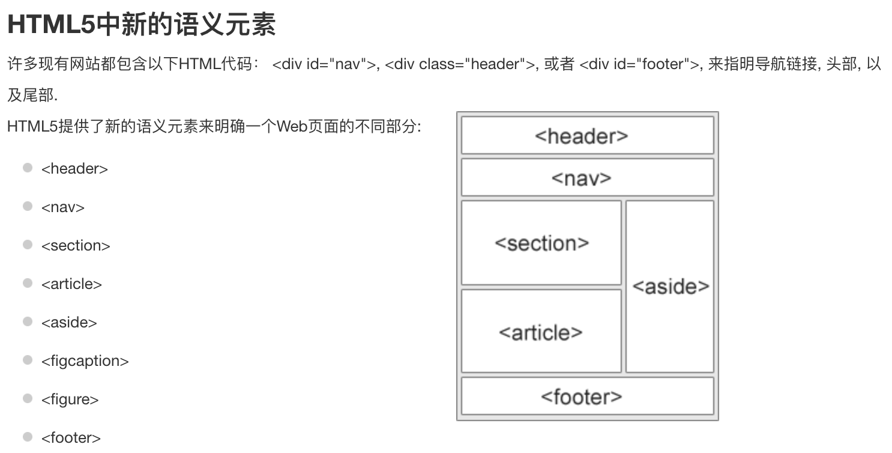

第一代iPhone于2007年1月9日由苹果公司前首席执行官史蒂夫·乔布斯发布，并在2007年6月29日正式发售。
第二代iPhone3G于2008年06月10日由美国苹果公司的掌门人史蒂夫·乔布斯在苹果全球开发者大会上正式发布。
一个语义元素能够清楚的描述其意义给浏览器和开发者。
无语义元素实例：<div>和<span>-无需考虑内容；
语义元素实例：<form>、<table>和<img>-无需考虑内容；

The Panda has become the symbol of WWF. The well-known panda logo of WWF originated from a panda named Chi Chi that was transferred from the Beijing Zoo to the London Zoo in the same year of the establishment of WWF.
第一代iPhone于2007年1月9日由苹果公司前首席执行官史蒂夫·乔布斯发布，并在2007年6月29日正式发售。
第二代iPhone3G于2008年06月10日由美国苹果公司的掌门人史蒂夫·乔布斯在苹果全球开发者大会上正式发布。